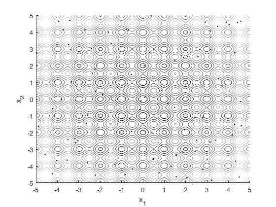
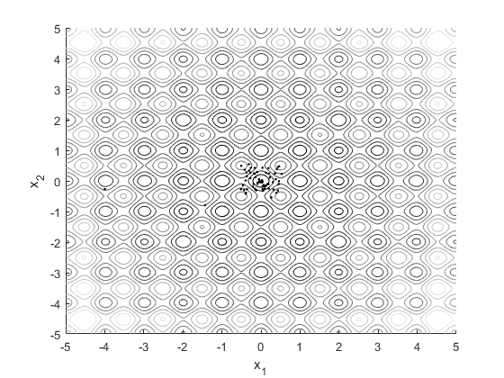
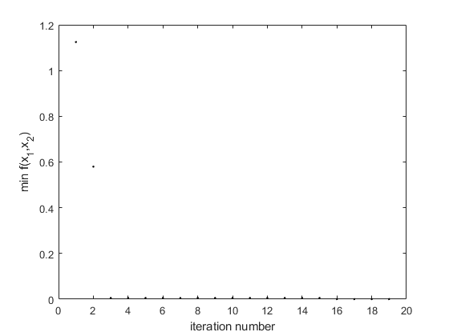

clear all
alpha = 1;
gamma = 1;
beta = 1;
MaxGeneration = 20;
m = 100;
X = -5+10*rand(2,m);
x = [-5:0.01:5];
y = [-5:0.01:5];
for i=1:length(x)
for j=1:length(y)
f(i,j) = 20+x(i)^2+y(j)^2-10*(cos(2*pi*x(i))+cos(2*pi*y(j)));
end
end
figure(1);clf;hold on
contour(x,y,f,10)
plot(X(1,:),X(2,:),'k.')
xlabel('x_1')
ylabel('x_2')
colormap(gray)
axis([-5 5 -5 5])
I_best = -1;
for k=1:length(X)
I(k) = 1/(20+X(1,k)^2+X(2,k)^2-10*(cos(2*pi*X(1,k))+cos(2*pi*X(2,k))));
end
t = 1;
while t<MaxGeneration
for i=1:m
for j=1:m
if I(j)>I(i)
X(:,i) = X(:,i)+beta*exp(-gamma*norm(X(:,i)-X(:,j))^2)*(X(:,j)-X(:,i))+alpha*(rand(2,1)-.5);
I(i) = 1/(20+X(1,i)^2+X(2,i)^2-10*(cos(2*pi*X(1,i))+cos(2*pi*X(2,i))));
end
end
end
index = find(I==max(I),1);
if max(I)>I_best
X_best = X(:,index);
I_best = max(I);
f_best(t) = 1/I_best;
else
f_best(t) = min(f_best);
end
X(:,index) = X(:,index)+2*(rand(2,1)-.5);
t = t+1;
end
figure(2);clf;hold on
contour(x,y,f,10)
plot(X(1,:),X(2,:),'k.')
xlabel('x_1')
ylabel('x_2')
colormap(gray)
axis([-5 5 -5 5])
figure(3)
plot(f_best,'k.')
xlabel('iteration number')
ylabel('min f(x_1,x_2)')
X_best
X_best =
0.0001
-0.0014
  